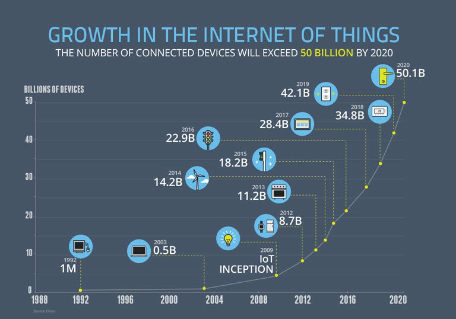

前端开发者开发了什么
一个前端开发者编写 HTML，CSS 和 JS 一般运行在由以下操作系统（又名 OSs）搭载的 web 平台上（例如网页浏览器）：
- Android
- Chromium
- iOS
- OS X
- Ubuntu (or some flavor of Linux)
- Windows Phone
- Windows
这些操作系统一般运行在以下列出的一个或者多个设备上：
- 台式电脑
- 笔记本电脑 / 上网笔记本电脑
- 手机
- 平板电脑
- 电视
- 手表
- 其他设备 (例如, 任何你能想象的物品，车，冰箱，灯，恒温器，等等)

图片来源：https://www.enterpriseirregulars.com/104084/roundup-internet-things-forecasts-market-estimates-2015/
一般来说，前端技术可以用在上述提到的操作系统和设备的web平台上：
- web 浏览器 (例如: Chrome, IE, Safari, Firefox).
- 无界面浏览器 (例如: phantomJS).
- WebView/browser tab（比如 iframe）作为运行环境。它嵌入到原生应用之中，并能够桥接原生APIs接口。WebView 应用一般包含一个由 web 技术开发的图形界面 (例如, HTML, CSS, and JS). (例如: Apache Cordova, NW.js, Electron)
- 通过 web 技术构建的原生应用，其在运行时通过桥接原生 APIs 进行解析。图形界面将借用原生的图形界面（例如, iOS native controls）而不是web技术。(例如: NativeScript, React Native)